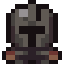
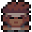
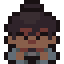
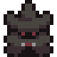

Classes
KURSE tem quatro classes, e nenhuma delas troca de arma ou sobe de nível no meio da run. Cada uma é uma forma fixa de jogar: um ataque principal e uma habilidade no botão direito, e é com isso que você vai até o fim.
Segure o botão de ataque principal e o personagem continua batendo sozinho; não existe combo manual de cliques em nenhuma classe. O que muda de uma pra outra é o alcance (corpo a corpo ou à distância), o dano por golpe, e a Destreza, o atributo que define a cadência. O intervalo entre ataques é sempre 2,0 ÷ Destreza segundos, com a Destreza travada entre 4 e 20. Na prática, o Guerreiro (14) ataca quase duas vezes mais rápido que o Mago (8), e o dano por golpe compensa exatamente na direção oposta.

Guerreiro
Corpo a corpo · Destreza 14 (a maior do jogo) · 18 de dano corpo a corpo base
A classe de cadência mais rápida da masmorra: cola no inimigo e não solta. O que falta em profundidade sobra em consistência: não tem stance nem recurso pra gerenciar, só o golpe e o Golpe Pesado.
- Golpe Pesado (botão direito): um cone de 72° na frente do personagem, telegrafado 0,42s antes (o chão pisca em aviso) e com 2,4s de recarga. Causa o dobro do dano corpo a corpo normal e empurra com força. Enquanto carrega, o Guerreiro anda a 38% da velocidade normal. Um dash cancela a carga na hora, então dá pra recuar se o inimigo sair da área.

Atirador
À distância · Destreza 12 · 12 de dano à distância base (o mais fraco por tiro do jogo)
O tiro principal não consome munição. A estatística de Munição do jogo existe, mas é a torreta e alguns itens que dependem dela, não o disparo normal. O dano baixo por flecha é compensado pela cadência e pela presença constante de uma torreta lutando junto.
- Torreta de Flechas (botão direito): planta uma torreta estacionária a até 150 de distância, recarga de 3,6s. O Atirador começa o jogo com espaço pra apenas 1 torreta viva por vez. Plantar uma nova além do limite derruba a mais antiga. Itens exclusivos da classe (Ninho de Setas, por exemplo) abrem mais vagas.
- Tem um golpe corpo a corpo de emergência, fraco, pra quando um inimigo fecha a distância. Não é pensado como uma opção viável de dano.

Guardião
Tanque (a maior vida do jogo) · Destreza 10 · 24 de dano corpo a corpo base (o maior dano cru por golpe)
A única classe cujo botão direito não é uma segunda forma de atacar. O Guardião defende, e defende bem o bastante pra o resto do kit compensar ser mais lento que o Guerreiro.
- Escudo (botão direito, segurar): bloqueia 100% do dano vindo de frente enquanto erguido, ao custo de reduzir o movimento a 55%.
- Aparo perfeito: se o botão for pressionado dentro de uma janela de 240ms bem no instante do impacto, o dano é completamente anulado, quem bateu sofre uma punição, e a recarga do escudo (normalmente 0,85s) zera na hora. Dá pra encadear vários aparos seguidos sem esperar. Segurar o escudo sem acertar essa janela ainda bloqueia, só não zera a recarga nem pune o atacante.

Mago
Conjurador · Destreza 8 (a menor do jogo, cadência mais lenta) · 18 de dano de varinha base (igual ao corpo a corpo do Guerreiro, só que à distância)
No mouse, a mira do Mago é 100% manual: o tiro sai exatamente pra onde o cursor está apontando, sem ajuda do jogo pra acertar um alvo em movimento. No gamepad tem uma assistência de mira leve, mas é a mais fraca das quatro classes (raio de 260, contra 320 do Guerreiro, 340 do Guardião e 520 do Atirador). Em troca, cada raio individual dói tanto quanto um golpe de espada do Guerreiro.
- Bomba Espectral (botão direito): telegrafada 0,45s antes (um círculo roxo marca onde vai cair), recarga de 3,2s, raio de posicionamento de 168 e raio de explosão de 70. Causa 2,5× o dano à distância base e empurra tudo que pega. Reduz o movimento do Mago a 42% durante a carga; um dash cancela.